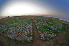
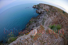
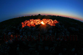
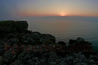
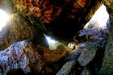
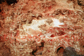
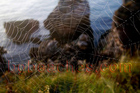

Kamen Bryag Beach Guide
About Kamen Bryag
Kamen Bryag is a destination along Bulgaria's beautiful Black Sea coast. This destination features Sandy beach, Bulgarian coastal atmosphere, summer facilities, making it ideal for beach lovers, families, travelers seeking authentic Bulgarian coast. The Bulgarian Black Sea coast offers 378 kilometers of diverse beaches, and Kamen Bryag provides its own unique character and attractions.
What to Expect
The beach area at Kamen Bryag features fine to medium sand typical of Black Sea beaches. During summer months (June-September), water temperatures range from 22-25°C (72-77°F), perfect for swimming. The area offers standard beach amenities including umbrella and sunbed rentals (typically 10-20 BGN per day), changing facilities, and food services. Peak season runs from mid-July through mid-August, when the beaches are busiest and prices highest.
Getting There & Practical Information
The nearest airports are Burgas (BOJ) and Varna (VAR), both serving international and domestic flights. Bus services connect major coastal towns during summer. Accommodation ranges from budget guesthouses (40-60 BGN/night) to mid-range hotels (80-150 BGN/night). Bulgaria uses the Bulgarian Lev (BGN), approximately 2 BGN = 1 EUR. English is commonly spoken in tourist areas.
Nearby Attractions
Beyond the beach, visitors can explore other Black Sea destinations, local attractions. The Bulgarian coast combines natural beauty with historical sites, traditional villages, and opportunities for hiking, water sports, and cultural experiences. Each location offers something unique while maintaining authentic Bulgarian coastal character.
Best Time to Visit
June and September offer excellent weather with fewer crowds and better prices compared to peak July-August. Water is warm enough for comfortable swimming from mid-June through mid-September. For the quietest experience and best value, consider late May or early October, though some facilities may have reduced hours.
Tips for Visitors
Bring high SPF sunscreen (30+) as the sun is strong. Many beach vendors prefer cash. Learning a few Bulgarian phrases is appreciated. Book accommodations in advance for July-August. Consider renting a car to explore multiple beaches. Try local restaurants for authentic Bulgarian cuisine and fresh Black Sea fish. Beach umbrellas and sunbeds are available but bringing your own gear saves money.
Photo Gallery
Browse our collection of photos from Kamen Bryag showing the beach, facilities, and atmosphere. These authentic images help you understand what to expect and plan your visit effectively.
- 
Panoramiv view of Kamen bryag's fire
Kamen bryag's fire from above- 
Kamen Bryag's rocky shore
Another view from above Kamen bryag's shore
Tents
Key point
At the fire
The road to the village- 
The fire at night
Clear sky above Kamen bryag
Steams over Kamen bryag
The fire again
Just rocks
Flower on the rocks- 
Beatiful Sunrise over Kamen bryag
Sunrise
Beauty on the rocks
The shore from below
The bathing place
Kamen bryag's strata
Sunrise between the rocks- 
Under the rocks at Kamen bryag
Another photo from under the rocks
Sunrise- 
More of the strata
The shore in its whole beauty at Sunrise
The sunrise through a spider web- 
Spider web
More of the shore
The shore in mist